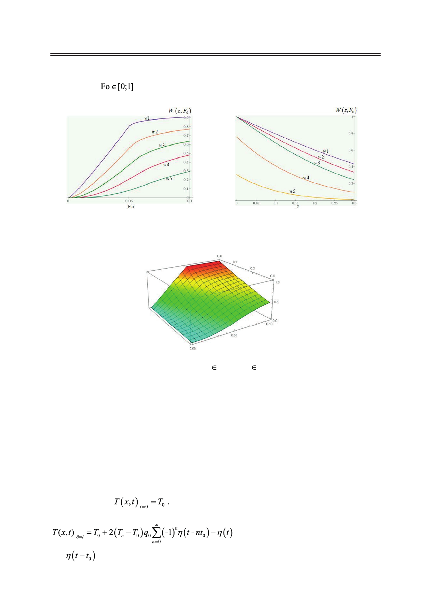

Математическое моделирование влияния релаксационных процессов на температурные
поля в упругом полупространстве
Серия графических зависимостей W(z, Fo) для различных сечений z от безразмерного
времени Fo (
) и наоборот (некоторые из них представлены ниже) построены в
системах компьютерной алгебры Wolfram Mathematica и Mathcad (рис. 8−10).
Рис. 8. График зависимости безразмерной
температуры W(z, Fo) от Fo при фиксирован-
ных значениях z: w1=W(0.07 Fo), w2=W(0.1, Fo),
w3=W(0.18, Fo), w4=W(0.27, Fo), w5=W(0.4, Fo).
Рис. 9. График зависимости безразмерной
температуры W(z, Fo) от z при фиксированных
значениях Fo: w1=W(z, 0.1), w2=W(z, 0.075),
w3=W(z, 0.06), w4=W(z, 0.04), w5= W(0.01, Fo).
Рис. 10. Трехмерный график зависимости безразмерной температуры
W(z, Fo) от z и Fo; z [0; 1], Fo [0; 0.4]
(температура на границе изменяется плавно с учетом времени релаксации).
Рассмотрение приведенных зависимостей позволяет заключить следующее:
1) при малых критериях Фурье безразмерная температура имеет максимум на левой грани-
це и постепенно убывает по толщине пластины, и при больших z имеет наименьшее значение;
2) с ростом критерия Фурье (с течением времени) температура в пластине также
стремится к температуре на левой границе;
3) сравнивая кривую w5 на рис. 9 с кривой w4 на рис. 5, можно заметить, что при
плавном нагреве, т.е. с учетом времени релаксации на границе пластина прогревается до
более высокой температуры.
Далее рассмотрим случай, когда температура на границе меняется мгновенно и мно-
гократно. Пусть в начальный момент времени распределение температуры по толщине
пластины равно
На левой границе периодически возникают скачки тем-
пературы, описываемые следующим рядом [4, c. 199]:
,
где
функция Хевисайда [5].
46
Российский технологический журнал 2017 Том 5 № 5